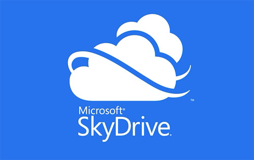
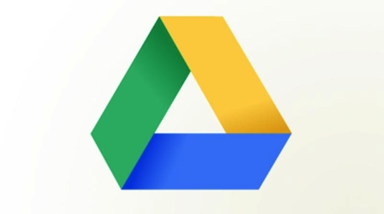

| Nome del servizio |
immagine logo del servizio |
indirizzo web dove raggiungerlo |
costo e spazio disponibile |
| Skydrive |
 |
https://onedrive.live.com/about/it-it/ |
è un servizio di cloud storage offerto da Microsoft, accessibile tramite browser e app desktop e smartphone. Per accedervi è necessario possedere un account Microsoft, e l'opzione standard gratuita offre all'utente 7 GB di spazio, espandibile a pagamento. |
| Teamdrive |
|
http://www.teamdrive.com/ |
|
| Google drive |
 |
https://accounts.google.com/ |
è un servizio web di storage e sincronizzazione online introdotto da Google il 24 aprile 2012 che permette il file hosting, file sharing e editing collaborativo di documenti, inizialmente, fino a 15 GB; da ottobre 2013 fino a 25 GB gratuiti |